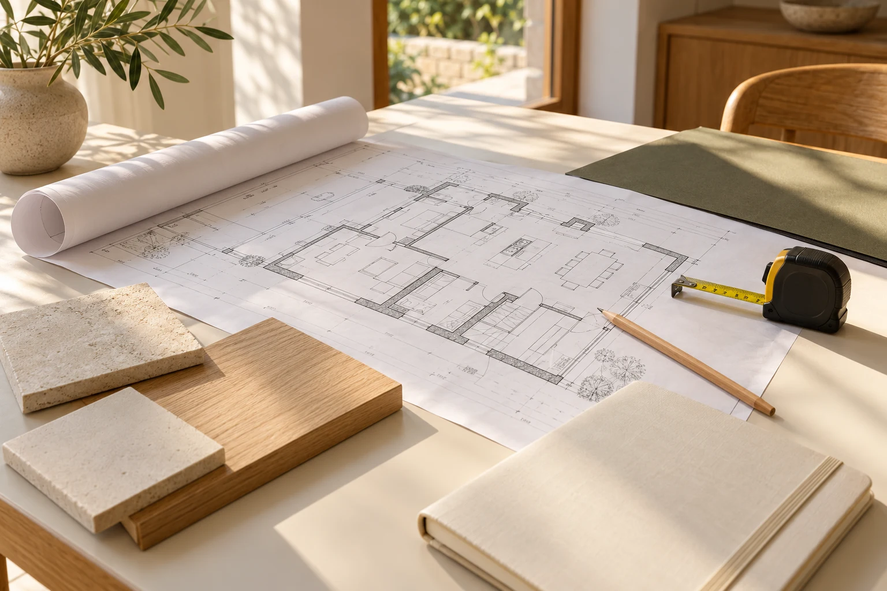

KI-generierte Illustration · kein ReferenzprojektHausbau & Komplettsanierung
Haus sanieren: Welche Reihenfolge ist sinnvoll?
Eine Sanierung wird übersichtlicher, wenn Entscheidungen vor den Arbeiten fallen. Entscheidend ist weniger eine starre Liste als die Frage, welche Arbeit die nächste vorbereitet.
Artikel lesen